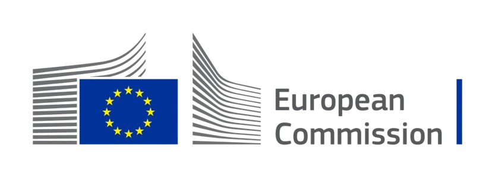
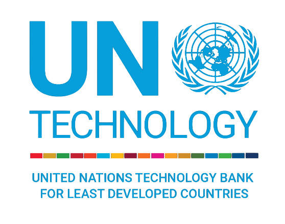
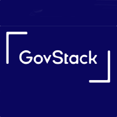
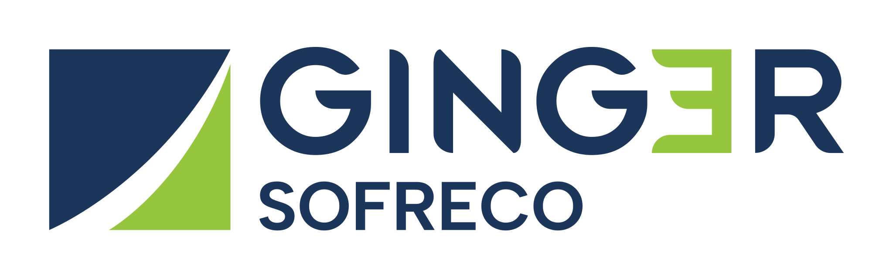

Olá, meu nome é
Paulo Amaral,
sou Analista Sênior
em Transformação Digital
Hi, my name is
Paulo Amaral,
I am a Senior Analyst
in Digital Transformation
Consultor com mais de 20 anos de experiência projetando e escalando sistemas digitais nacionais em parceria com PNUD, UNICEF, UN RCO e governos de mais de 5 países. Entregando impacto real — dos dados às decisões.
Consultant with 20+ years of experience designing and scaling national digital systems in partnership with UNDP, UNICEF, UN RCO and governments across 5+ countries. Delivering real impact — from data to decisions.
COLABORAÇÕES
COLLABORATIONS
Trabalhando em parceria com instituições globais Working together with global institutions





Conheça meus serviços Explore my services
Soluções digitais completas — da estratégia à implementação — sempre com foco em impacto real e sistemas que funcionam.
Complete digital solutions — from strategy to implementation — always focused on real impact and systems that work.
Transformação DigitalDigital Transformation
Estratégia e implementação de sistemas digitais nacionais, do diagnóstico de maturidade digital à execução técnica com governos e organizações internacionais.
Strategy and implementation of national digital systems, from digital maturity diagnostics to full technical execution with governments and international organizations.
Data Analytics & BIData Analytics & BI
Dashboards Power BI e Metabase, pipelines de dados e análise para apoio à tomada de decisão em proteção social, saúde e desenvolvimento internacional.
Power BI and Metabase dashboards, data pipelines, and analytics to support decision-making in social protection, health, and international development.
Sistemas de Saúde (DHIS2)Health Information Systems
Fortalecimento de sistemas DHIS2, coleta de dados EPI, dashboards de imunização e gestão de proteção à criança com PRIMERO e CRVS.
Strengthening DHIS2 systems, EPI data collection, immunization dashboards, and child protection case management with PRIMERO and CRVS.
Sistemas de Governo & ONUGovernment & UN Systems
Plataformas eleitorais, justiça digital, registo civil, proteção social e infraestrutura ICT para o setor público e agências da ONU.
Election platforms, digital justice, civil registration, social protection, and ICT infrastructure for public sector institutions and UN agencies.
Capacitação & TreinamentoCapacity Building & Training
Formação de equipes técnicas, workshops de BI e dados, mentoria de TI e criação de centros de treinamento para instituições do setor público.
Training technical teams, BI and data workshops, IT mentoring, and establishing training centers for public sector institutions.
Entre em contatoGet in touch
Precisa de outro serviço? Entre em contato — há uma grande chance de eu poder ajudar no seu projeto!
Need another service? Reach out — there's a good chance I can help with your project!
Falar comigoTalk to meSkills para entregar, não só aconselhar Skills to deliver, not just advise
Consultoria estratégica com capacidade prática de implementação: avaliações de maturidade, sistemas de software, servidores, redes, segurança, dados e plataformas públicas digitais.
Strategic advisory backed by hands-on implementation: maturity assessments, software systems, servers, networks, security, data, and digital public platforms.
20+ years
root@impact:~$
Do roadmap ao servidor em produção From roadmap to production server
Experiência rara combinando diagnóstico institucional, arquitetura de sistemas, infraestrutura Linux, redes, DevOps, dados e entrega de plataformas mission-critical para governo, ONU, justiça, saúde e proteção social.
A rare mix of institutional diagnostics, system architecture, Linux infrastructure, networks, DevOps, data, and mission-critical platform delivery for government, UN, justice, health, and social protection.
Implementação de softwareSoftware implementation
Infraestrutura & servidoresInfrastructure & servers
Redes & segurançaNetworks & security
Dados & observabilidadeData & observability
Plataformas públicasPublic sector platforms
Quem está por trás desses projetos? Who is behind these projects?
Profissional dedicado a criar soluções digitais de impacto, combinando estratégia, dados e tecnologia para transformar desafios em resultados mensuráveis em contextos de desenvolvimento internacional.
A professional dedicated to building impactful digital solutions, combining strategy, data, and technology to turn challenges into measurable results in international development contexts.
20+ anos de experiência20+ years of experience
Mais de duas décadas projetando sistemas digitais nacionais em parceria com PNUD, UNICEF, União Europeia e governos em mais de 5 países.
Over two decades designing national digital systems in partnership with UNDP, UNICEF, European Union, and governments across 5+ countries.
20+ projetos de alto impacto20+ high-impact projects
Portfólio avaliado em mais de $100M USD — de sistemas eleitorais para 650,000+ eleitores a plataformas de proteção social para 50,000+ beneficiários.
Portfolio valued at over $100M USD — from election systems for 650,000+ voters to social protection platforms serving 50,000+ beneficiaries.
5+ países atendidos5+ countries served
Atuação internacional em Timor-Leste, Brasil, Ilhas do Pacífico e além, sempre com foco em tecnologia para o bem social e desenvolvimento humano.
International work across Timor-Leste, Brazil, Pacific Islands, and beyond — always with a focus on technology for social good and human development.
Resumo de projetos Project summary
Uma seleção de iniciativas do meu CV e portfólio, com foco em infraestrutura pública digital, GovTech inclusivo, dados, IA e sistemas nacionais para governos e organizações internacionais.
A selected view of initiatives from my CV and portfolio, focused on digital public infrastructure, inclusive GovTech, data, AI, and national systems for governments and international organizations.
Mozambique · 2026
WiG
Women in GovTech Challenge — Moçambique Women in GovTech Challenge — Mozambique
Atuação como speaker e instrutor no Women in GovTech Challenge 2026 em Moçambique, designado por Kwantu/GIZ como especialista em Digital Government e GovStack para apoiar mulheres inovadoras em GovTech.
Speaker and instructor for the 2026 Women in GovTech Challenge in Mozambique, assigned by Kwantu/GIZ as a Digital Government and GovStack expert supporting women innovators in GovTech.
Conteúdo focado em DPI/DPG, IA aplicada a serviços públicos, interoperabilidade, inclusão digital, gender divide, digital divide e desenho de serviços públicos digitais sustentáveis.
Content focused on DPI/DPG, AI for public services, interoperability, digital inclusion, gender divide, digital divide, and sustainable digital public service design.
Open Source
GH
Contribuições GitHub para DPI/DPG GitHub Contributions for DPI/DPG
Mantém contribuições públicas focadas em Infraestrutura Pública Digital e Bens Públicos Digitais, com destaque para Awesome DPI, além de ferramentas como n8nverse, easy-sop-docs, ai-video-translator-dubbing, Easy-ELK, integrações KoboToolbox/Google Sheets, Primero extractor e scripts DevOps/Docker.
Maintains public contributions focused on Digital Public Infrastructure and Digital Public Goods, led by Awesome DPI, plus tools such as n8nverse, easy-sop-docs, ai-video-translator-dubbing, Easy-ELK, KoboToolbox/Google Sheets integrations, Primero extractor, and DevOps/Docker scripts.
2026
TB
Digital Readiness Assessment Digital Readiness Assessment
Diagnóstico whole-of-government para Timor-Leste no programa regional do UN Technology Bank, usando o ITU Digital Transformation Wheel em quatro países menos desenvolvidos.
Whole-of-government diagnostic for Timor-Leste under the UN Technology Bank regional programme, using the ITU Digital Transformation Wheel across four Least Developed Countries.
2026
UN
Dalan ba Digital Dalan ba Digital
Avaliação nacional de maturidade digital e AI readiness em 9 ministérios, com plataforma customizada para scoring, análise e recomendações alinhadas à Timor Digital 2032.
National digital maturity and AI readiness assessment across 9 ministries, with a custom scoring and analysis platform aligned with Timor Digital 2032.
2022–2023
CNE
Sistemas Eleitorais Nacionais National Election Systems
Design e deploy do Centro Nacional de Tabulação e plataforma digital do CNE para eleições presidenciais e parlamentares, suportando 650.000+ eleitores e 1.400 centros de votação.
Designed and deployed the CNE National Tabulation Centre and digital platform for presidential and parliamentary elections, supporting 650,000+ voters and 1,400 voting centres.
2024–2025
UN
CPIMS, CRVS & Saúde Digital CPIMS, CRVS & Digital Health
Fortalecimento de sistemas nacionais de proteção infantil, registro civil e saúde, incluindo PRIMERO CPIMS, CRVS, DHIS2, dashboards EPI e workshops multissetoriais.
Strengthened national child protection, civil registration, and health systems, including PRIMERO CPIMS, CRVS, DHIS2, EPI dashboards, and multi-sector workshops.
2023–2025
BI
Dados para Proteção Social Data for Social Protection
Análise e migração de dados para PNDS e Jerasaun Foun Bolsa da Mãe, apoiando USD 8M+ em pagamentos, 50.000 crianças e mais de USD 100M em projetos rurais.
Data analysis and migration for PNDS and Jerasaun Foun Bolsa da Mãe, supporting USD 8M+ in payments, 50,000 children, and over USD 100M in rural projects.
Social Protection
KB
Kartaun Bele
Plataforma digital de transferência de dinheiro para famílias de baixa renda, apoiando proteção social, gestão de beneficiários e pagamentos seguros em Timor-Leste.
Digital cash transfer platform for low-income households, supporting social protection, beneficiary management, and secure payments in Timor-Leste.
Social Protection
JF
Jerasaun Foun
Analytics e relatórios para programa nacional de proteção social, permitindo tomada de decisão baseada em evidências e validação de pagamentos em escala.
Data analytics and reporting for a national social protection programme, enabling evidence-based decision-making and payment validation at scale.
Banking
IR
Iris Recognition Banking System Iris Recognition Banking System
Implantação de autenticação biométrica para fortalecer KYC, prevenção de fraude e segurança bancária em uma instituição financeira nacional.
Biometric authentication deployment to strengthen KYC, fraud prevention, and banking security in a national financial institution.
Education
TR
Teacher Recruitment & Hiring System Teacher Recruitment & Hiring System
Primeira plataforma digital de recrutamento para o Ministério da Educação, melhorando transparência, planejamento de força de trabalho e eficiência do processo.
First digital recruitment platform for the Ministry of Education, improving transparency, workforce planning, and process efficiency.
Education
SC
School Census System School Census System
Ferramentas e fluxos digitais de coleta de dados para censo escolar nacional e pesquisas de linha de base.
Digital data collection tools and workflows for a nationwide education census and baseline surveys.
Safeguarding
RS
UN Women ROSA Chatbot UN Women ROSA Chatbot
Sistema digital seguro para denúncias de assédio sexual no setor público, fortalecendo accountability e reporte centrado nas sobreviventes.
Secure digital reporting system for sexual harassment complaints in the public sector, strengthening accountability and survivor-centred reporting.
Enterprise
SAP
SAP ERP Implementations SAP ERP Implementations
Integrações SAP ABAP em módulos MM, PP e PI para clientes de manufatura e varejo de grande escala no Brasil.
SAP ABAP integrations across MM, PP, and PI modules for large-scale manufacturing and retail clients in Brazil.
AI
AI
Tax Classification AI Tool Tax Classification AI Tool
Piloto de IA/ML para classificação fiscal automatizada, aumentando produtividade de consultores e identificando oportunidades de otimização de alto valor.
AI/ML pilot for automated tax classification, increasing consultant productivity and identifying high-value optimisation opportunities.
Justice
DR
DRBI Asset Declaration System DRBI Asset Declaration System
Plataforma digital de declaração de patrimônio e interesses para tribunais e órgãos anticorrupção, atendendo 37.000+ agentes públicos.
Digital asset and interest declaration platform for courts and anti-corruption bodies, serving 37,000+ public officials.
Justice
JM
Justice Sector LMS & CMS Platforms Justice Sector LMS & CMS Platforms
Learning Management Systems e Case Management Systems para procuradoria e unidades anticorrupção, melhorando gestão do conhecimento e rastreio de casos.
Learning Management Systems and Case Management Systems for prosecution and anti-corruption units, improving knowledge management and case tracking.
Security
PN
National Police Systems National Police Systems
Escala e operação de 40+ servidores e 20+ bases de dados para sistemas de inteligência policial e gestão de casos.
Scaled and operated 40+ servers and 20+ databases for police intelligence and case management systems.
Child Protection
CP
PRIMERO CPIMS Dashboards PRIMERO CPIMS Dashboards
Dashboards e analytics para gestão de casos de proteção infantil, apoiando decisões operacionais e políticas públicas.
Dashboards and analytics for child protection case management, supporting policy and operational decisions.
Civil Registry
CR
CRVS & Civil Registration CRVS & Civil Registration
Melhorias técnicas para fortalecer sistemas de registro de nascimento e qualidade dos dados de registro civil junto ao Ministério da Justiça.
Technical improvements to strengthen birth registration systems and civil registration data quality with the Ministry of Justice.
Health
HI
Health Information Systems Health Information Systems
Refinamento de coleta, validação e relatórios no DHIS2, incluindo dashboards EPI para monitoramento de imunização.
Refined DHIS2 data collection, validation, and reporting, including EPI dashboards for immunisation monitoring.
Rural Dev
PN
PNDS PARTISIPA Platform PNDS PARTISIPA Platform
Gestão digital ponta a ponta para desenvolvimento rural, incluindo coleta de dados, análise, relatórios e migração de 9.000+ projetos.
End-to-end digital project management for rural development, including data collection, analysis, reporting, and migration of 9,000+ projects.
M&E
GB
M&E Systems for CAJ M&E Systems for CAJ
Desenho de sistema de Monitoramento e Avaliação para os Centros de Acesso à Justiça na Guiné-Bissau, definindo especificações, indicadores e arquitetura de dados.
Monitoring & Evaluation system design for the Centres for Access to Justice in Guinea-Bissau, defining specifications, indicators, and data architecture.
Dê uma olhada na minha experiência Take a look at my experience
Mais de 20 anos desenvolvendo soluções digitais, liderando projetos de alto impacto e transformando desafios técnicos em resultados mensuráveis para governos e organizações internacionais.
Over 20 years building digital solutions, leading high-impact projects, and turning technical challenges into measurable results for governments and international organizations.
Abr 2026 – Presente
Apr 2026 – Present
TB
UN Technology Bank – Consultor UN Technology Bank – Consultant
Atua no projeto regional do UN Technology Bank (Camboja, Laos, Nepal, Timor-Leste), conduzindo diagnóstico whole-of-government usando o framework ITU Digital Transformation Wheel nas dimensões de Acesso, Adoção e Criação de Valor. Entregáveis: avaliação de maturidade digital, análise de políticas, workshops ministeriais e roadmap para Infraestrutura Pública Digital.
Engaged on the UN Technology Bank regional digital transformation project (Cambodia, Laos, Nepal, Timor-Leste), conducting a whole-of-government diagnostic using the ITU Digital Transformation Wheel across Access, Adoption, and Value Creation dimensions. Deliverables include digital maturity assessment, policy analysis, stakeholder workshops, and a Digital Public Infrastructure roadmap.
Jan 2026 – Presente
Jan 2026 – Present
UN
PNUD – Consultor de Transformação Digital UNDP – Digital Transformation Consultant
Lidera a Avaliação de Maturidade Digital Nacional no programa Dalan ba Digital em 9 ministérios, culminando em um roteiro nacional alinhado à Timor Digital 2032. Co-liderou integração de Digital Maturity Assessment e AI Readiness Assessment. Construiu plataforma customizada baseada no framework Deloitte com prototipagem assistida por IA.
Leads the National Digital Maturity Assessment for Dalan ba Digital across 9 ministries, culminating in a national transformation roadmap aligned with Timor Digital 2032. Co-led the integration of a Digital Maturity and AI Readiness Assessment. Built a custom platform on the Deloitte framework with AI-assisted rapid prototyping.
2026 – Presente
2026 – Present
GS
GovStack / GovMarket – Provedor de Serviços em DPI GovStack / GovMarket – Digital Public Infrastructure Service Provider
Listado no GovMarket como provedor de serviços que apoia a abordagem GovStack para DPG/DPI. Concluiu a certificação GovStack Architecture Training e contribuiu para a arquitetura de interoperabilidade com X-Road, integrando o portal One-stop-shop com instituições governamentais no programa "dalan ba digital" em Timor-Leste. Áreas: Operação & Manutenção, Design de Serviços, Desenvolvimento de Software, Integração de Sistemas e Assessoria Técnica. Idiomas: Português e Inglês.
Listed on GovMarket as a service provider supporting the GovStack approach for DPG/DPI. Completed the GovStack Architecture Training and contributed to the interoperability architecture using X-Road, integrating the One-stop-shop portal with government institutions under the "dalan ba digital" programme in Timor-Leste. Services: Operation & Maintenance, Service Design, Software Development, System Integration, and Technical Advisory. Languages: Portuguese and English.
Ago 2025 – Presente
Aug 2025 – Present
RC
UN RCO – Consultor de Transformação Digital UN Resident Coordinator's Office – Digital Transformation Consultant
Dirigiu o mapeamento estratégico do ecossistema digital de Timor-Leste, identificando insights, lacunas sistêmicas e oportunidades. Mapeou marcos institucionais, políticos e de financiamento da digitalização e contribuiu para um One-UN Position Paper com recomendações estratégicas e plano de ação.
Directed a strategic mapping of Timor-Leste's digital ecosystem, identifying actionable insights, systemic gaps, and opportunities. Mapped institutional, policy, and financing frameworks for digitalisation, and contributed to a One-UN Position Paper with strategic recommendations and an action plan.
Abr 2025 – Jun 2025
Apr 2025 – Jun 2025
GS
Ginger Sofreco – Senior Expert em Sistemas de Informação Ginger Sofreco – Senior Expert in Information Systems Management
Team Leader do projeto e-Just (e-Governance for the Judicial System) apoiado pela UE, cobrindo o sistema judicial nacional em todos os 13 municípios. Apoiou a Delegação da UE e o TECS no escopo de um projeto para modernização e digitalização do sistema judicial do país.
Team Leader for the EU-supported e-Just project covering the national court system across all 13 municipalities. Assisted the EU Delegation and TECS in scoping a project for the modernisation and digitalisation of the country's judicial system.
Mar 2025 – Presente
Mar 2025 – Present
UH
UNICEF – Consultor T4D em Saúde UNICEF – Technology for Development (T4D) Health Consultant
Fornece apoio técnico e programático em T4D e iniciativas de transformação digital, liderando formulação de políticas e desenvolvimento estratégico para fortalecimento de sistemas. Construiu e mantém parcerias estratégicas, com capacitação em níveis nacional e municipal.
Provides technical and programmatic support for T4D and digital transformation initiatives, leading policy formulation and strategic development for system strengthening. Built and maintains strategic partnerships, delivering capacity-building at national and municipal levels.
Ago 2024 – Presente
Aug 2024 – Present
UI
UNICEF – Consultor de TI (CPIMS / CRVS) UNICEF – Information Technology Consultant (CPIMS / CRVS)
Fortaleceu os sistemas nacionais CPIMS e CRVS nos 13 municípios de Timor-Leste, apoiando proteção à criança e registro civil para 1,3M+ cidadãos, em colaboração com o Ministério da Justiça e o MSSI. Facilitou a integração no ecossistema de e-governança e conduziu workshops multissetoriais.
Strengthened the national CPIMS and CRVS systems across Timor-Leste's 13 municipalities, supporting child protection and civil registration for 1.3M+ citizens, with the Ministry of Justice and MSSI. Facilitated integration into the broader e-governance ecosystem and convened multi-sectoral workshops.
Abr 2023 – Presente
Apr 2023 – Present
CI
Catalpa International – Data Analyst Catalpa International – Data Analyst
Migrou dados de 9.000+ projetos (USD 100M+) para a plataforma PNDS. Executou análise para o projeto Jerasaun Foun Bolsa da Mãe, facilitando USD 8M+ em pagamentos para 40.000+ beneficiárias, 50.000 crianças e 10.000+ gestantes. Capacitou 12+ profissionais no Pacific eLearning Programme.
Migrated data for 9,000+ projects (USD 100M+) into the PNDS platform. Delivered analysis for the Jerasaun Foun Bolsa da Mãe project, facilitating USD 8M+ in payments to 40,000+ beneficiaries, 50,000 children, and 10,000+ pregnant women. Coached 12+ professionals across the Pacific eLearning Programme.
Fev 2022 – Jun 2023
Feb 2022 – Jun 2023
UC
PNUD / CNE – Especialista em Transformação Digital (Eleitoral) UNDP / CNE – Digital Transformation Specialist (Electoral)
Liderou o design e deploy do Centro Nacional de Tabulação do CNE e da Plataforma de Transformação Digital para as eleições nacionais de 2022 e 2023. Apoio técnico abrangente validando resultados de mais de 650.000 eleitores em 1.400 centros de votação.
Led the design and deployment of the CNE National Tabulation Centre and Digital Transformation Platform for the 2022 and 2023 national elections. Provided comprehensive technical support validating results from 650,000+ voters across 1,400 voting centres.
Nov 2022 – Abr 2023
Nov 2022 – Apr 2023
ME
MOEYS – Consultor Ministry of Education (MOEYS) – Consultant
Planejou e executou um sistema CAPI nacional para o censo escolar e pesquisa de base, cobrindo 1.700+ escolas em 13 municípios. Treinou 70+ entrevistadores e implantou infraestrutura cloud para suporte e manutenção dos dados do censo.
Planned and executed a nationwide CAPI system for the national school census and baseline survey, covering 1,700+ schools across 13 municipalities. Trained 70+ enumerators and deployed cloud-hosted infrastructure for census data.
Dez 2022 – Abr 2023
Dec 2022 – Apr 2023
PG
Procuradoria Geral – Senior System Engineer Office of the Prosecutor General – Senior System Engineer
Liderou sessões de capacitação para equipe de TI com 10+ profissionais utilizando tecnologias open-source e simuladores de laboratório de rede. Modernizou a infraestrutura de TI e implantou soluções open-source, reforçando segurança de rede e eficiência operacional.
Led training and capacity-building sessions for the 10+ IT team using open-source technologies and network training lab simulators. Modernised IT infrastructure and rolled out open-source solutions, enhancing network security and operational efficiency.
Jan 2020 – Abr 2024
Jan 2020 – Apr 2024
ET
EYETRUST LDA – Head of Technology EYETRUST LDA – Head of Technology
Supervisionou operações de TI em 5+ projetos simultâneos nos setores bancário, judicial e público. Ponto focal de integração entre Temenos T24 (Índia), IrisGuard (Reino Unido) e a equipe de TI do BNCTL, implantando reconhecimento biométrico por íris para KYC e prevenção de fraude.
Oversaw IT operations across a 5+ project portfolio in banking, justice, and public sectors. Served as integration focal point between Temenos T24 (India), IrisGuard (UK), and BNCTL's IT team, deploying biometric iris recognition for KYC and fraud prevention.
Abr 2019 – Fev 2022
Apr 2019 – Feb 2022
TJ
Tribunal de Recurso – Consultor de TI Court of Appeals – Information Technology Advisor
Assessorou o Chefe de TI e orientou equipe de 6 em iniciativas de modernização digital em 7 tribunais distritais e o Tribunal de Recurso. Aumentou disponibilidade de sistemas de 40% para 99%. Reduziu custos anuais em USD 60.000+ com padronização e adoção de open-source.
Advised the IT Chief and guided a team of 6 through modernisation initiatives across 7 District Courts and the Court of Appeals. Increased system availability from 40% to 99%. Reduced annual costs by USD 60,000+ via standardisation and open-source adoption.
Jul 2014 – Mar 2019
Jul 2014 – Mar 2019
PG
Procuradoria Geral – Consultor de TI (PNUD Justice System) Office of the Prosecutor General – IT Advisor (UNDP Justice System Project)
Formulou e executou estratégias ICT incluindo o rollout de IIMS (Case Management), RH, LMS, e-mail e videoconferência. Liderou o primeiro Centro de Treinamento ICT da Procuradoria em parceria com a KOICA. Aumentou disponibilidade de sistemas de 50% para 99%.
Formulated and executed ICT strategies including IIMS (Case Management), HR, LMS, email, and videoconferencing rollouts. Spearheaded the first ICT Training Centre for the Prosecutor General in partnership with KOICA. Increased system availability from 50% to 99%.
Jul 2015 – Dez 2023
Jul 2015 – Dec 2023
OT
Otimizai LDA – Head of Technology Otimizai LDA – Head of Technology
Dirigiu operações ICT empresariais — planejamento de infraestrutura, controles de segurança e entrega de serviços mission-critical em banca, justiça e setor público. Entregou soluções de IA/ML, incluindo uma plataforma de classificação fiscal que identificou USD 1M+ em oportunidades de otimização tributária.
Directed enterprise ICT operations — infrastructure planning, security controls, and mission-critical service delivery across banking, justice, and public sector. Delivered AI/ML solutions including a tax classification platform that identified USD 1M+ in tax optimisation opportunities.
Jun 2013 – Jul 2014
Jun 2013 – Jul 2014
FH
FH Consulting – NTT – Consultor SAP ABAP FH Consulting – NTT – SAP ABAP Consultant
Desenvolvimento ABAP, testes, migração de dados e integração para projetos SAP ERP em grandes empresas brasileiras (módulos MM, SD, AFS, WM, PI). Implantou SAP ECC e AFS para o Grupo Malwee (2 empresas, 5 fábricas, 90 lojas). Integrou controle estatístico .NET ao SAP ECC via RFC.
ABAP development, testing, data migration, and integration for SAP ERP projects at large Brazilian enterprises (MM, SD, AFS, WM, PI modules). Deployed SAP ECC and AFS for Malwee Group (2 company codes, 5 factories, 90 retail locations). Integrated a .NET SPC system with SAP ECC via RFC.
Jan 2013 – Jun 2013
Jan 2013 – Jun 2013
SO
SONDA IT – Consultor SAP ABAP SONDA IT – SAP ABAP Consultant
Desenvolvimento ABAP, migração de dados e integração de sistemas legados. Aplicou requisitos fiscais do governo brasileiro para a BRF Foods e criou novos módulos ABAP para a plataforma pw-CE da Solway (Química).
ABAP development, data migration, and legacy system integration. Applied Brazilian Government fiscal requirements for BRF Foods and created new ABAP modules for Solway's pw-CE trade management platform (Chemical).
Nov 2002 – Dez 2011
Nov 2002 – Dec 2011
CK
CKBV Florestal – Analista de Desenvolvimento de Sistemas CKBV Florestal – System Development Analyst
Administrou ERP Datasul/Totvs, HCM TOTVS e CRM, incluindo DBA, segurança, backups e virtualização. Implantou IBM Tivoli para backup/recovery e adotou gestão open-source, reduzindo custos operacionais em até 30%. Entregou relatórios Balanced Scorecard (BSC) em todas as unidades de negócio.
Administered ERP Datasul/Totvs, HCM TOTVS, and CRM including DBA, security, backups, and virtualisation. Deployed IBM Tivoli for backup/recovery and adopted open-source server management, reducing operational costs by up to 30%. Delivered Balanced Scorecard (BSC) reporting across all business units.
Contato direto
Direct contact
Vamos trabalhar juntos Let's work together
Disponível para projetos de consultoria em transformação digital, sistemas de dados e assessoria tecnológica para governos e organizações internacionais.
Available for consulting engagements in digital transformation, data systems, and technology advisory for governments and international organizations.
Agendar uma callBook a Call
WhatsApp
Fale comigo
Start a conversation
Aponte a câmera ou use o botão abaixo.
Point your camera or use the button below.
Scan para WhatsAppScan to chat on WhatsApp